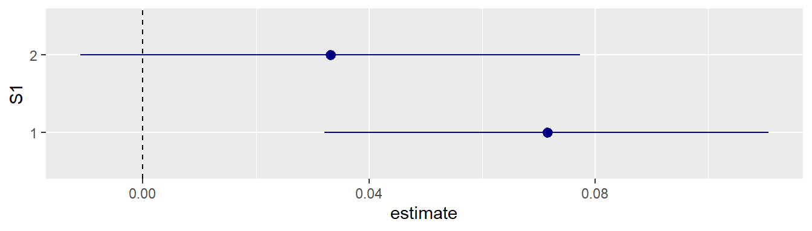
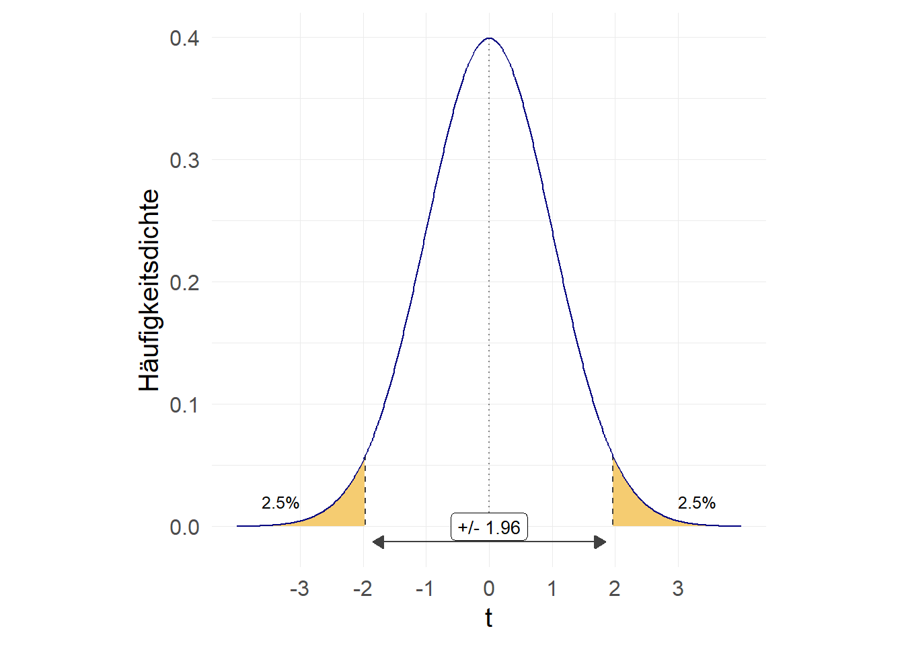

library(tidyverse)
etb18 <- haven::read_dta("./data/BIBBBAuA_2018_suf1.0.dta")7 Inferenzstatistik & Zusammenhangsmaße
Neue Pakete:
install.packages("broom") # Ergebnisse in data.frame umwandeln
install.packages("effectsize") # u.a. Cohen's D berechnen
install.packages("survey") # GewichtungBisher haben wir die Angaben aus unserem Datensatz immer als fix angesehen. Ziel einer statistischen Auswertung ist aber meistens, Aussagen über die Grundgesamtheit oder Population zu treffen. Im Fall der ETB 2018 wären das also alle Erwerbstätigen in Deutschland.
7.1 t-Tests
Eines der zentralen Werkzeuge der grundlegenden Inferenzstatistik ist der t-Test Details im Anhang.
Ein typischer Anwendungsfall für t-Tests ist der Gruppenvergleich, dazu geben wir in t.test() die zu testende Variable und und nach einer ~1 die Gruppenvariable an. Wir testen hier also auf Altersunterschiede zwischen Männern (S1=1, daher group1) und Frauen (S1=2, daher group2).
etb18$zpalter[etb18$zpalter>100] <- NA
t.test(etb18$zpalter~etb18$S1)
Welch Two Sample t-test
data: etb18$zpalter by etb18$S1
t = -8.801, df = 19681, p-value < 2.2e-16
alternative hypothesis: true difference in means between group 1 and group 2 is not equal to 0
95 percent confidence interval:
-1.727972 -1.098490
sample estimates:
mean in group 1 mean in group 2
46.49079 47.90402 Es hat sich als Konvention etabliert, von einem signifikanten Unterschied zu sprechen wenn die Irrtumswahrscheinlichkeit unter 5% liegt. Das bedeutet:
Assuming that the null hypothesis is true and the study is repeated an infinite number times by drawing random samples from the same populations(s), less than 5% of these results will be more extreme than the current result.2
Da hier der p-Wert sehr viel kleiner ist als 0.05 ist (p-value < 2.2e-16)3, können wir von einen statistisch signifikanten Unterschied sprechen.
Standardmäßig bekommen wir einen beidseitigen Test ("two.sided"), wir können aber auch einen links- ("less") oder rechtsseitigen ("greater") Test anfordern mehr dazu:
t.test(etb18$zpalter~etb18$S1,alternative = "two.sided")
Welch Two Sample t-test
data: etb18$zpalter by etb18$S1
t = -8.801, df = 19681, p-value < 2.2e-16
alternative hypothesis: true difference in means between group 1 and group 2 is not equal to 0
95 percent confidence interval:
-1.727972 -1.098490
sample estimates:
mean in group 1 mean in group 2
46.49079 47.90402 t.test(etb18$zpalter~etb18$S1,alternative = "less")
Welch Two Sample t-test
data: etb18$zpalter by etb18$S1
t = -8.801, df = 19681, p-value < 2.2e-16
alternative hypothesis: true difference in means between group 1 and group 2 is less than 0
95 percent confidence interval:
-Inf -1.149096
sample estimates:
mean in group 1 mean in group 2
46.49079 47.90402 t.test(etb18$zpalter~etb18$S1,alternative = "greater")
Welch Two Sample t-test
data: etb18$zpalter by etb18$S1
t = -8.801, df = 19681, p-value = 1
alternative hypothesis: true difference in means between group 1 and group 2 is greater than 0
95 percent confidence interval:
-1.677367 Inf
sample estimates:
mean in group 1 mean in group 2
46.49079 47.90402 Für Effektgrößen wie Cohen’s D empfiehlt sich das Paket {effectsize}:
library(effectsize)
cohens_d(etb18$zpalter~etb18$S1)Cohen's d | 95% CI
--------------------------
-0.12 | [-0.15, -0.10]
- Estimated using pooled SD.7.1.1 Übung
7.2 Korrelation
Zur Bestimmung eines Zusammenhangs zwischen zwei metrischen Variablen empfiehlt sich der Pearson-Korrelationskoeffizient:
\[r = \frac{\frac{1}{n}\Sigma_{i}^{n}(x_i-\bar{x})(y_i-\bar{y})}{\sqrt{\frac{1}{n}\Sigma_{i}^{n}(x_i-\bar{x})^2} \times \sqrt{\frac{1}{n}\Sigma_{i}^{n} (y_i-\bar{y})^2}} = \frac{cov_{xy}}{s_x \times s_y}\]
In R können wir den Korrelationskoeffizienten mit cor.test() berechnen:
attributes(etb18$F231)$label[1] "Wie viele Stunden arbeiten Sie i.d.R. im Durchschnitt pro Woche von zu Hause aus"etb18$F231[etb18$F231>990] <- NA
cor.test(etb18$zpalter,etb18$F231,method = "pearson", use = "pairwise.complete.obs")
Pearson's product-moment correlation
data: etb18$zpalter and etb18$F231
t = 3.6513, df = 4427, p-value = 0.0002639
alternative hypothesis: true correlation is not equal to 0
95 percent confidence interval:
0.02538399 0.08411155
sample estimates:
cor
0.05479515 Es handelt sich mit 0.05480 also um einen geringen Zusammenhang. Der p-Wert gibt uns auch hier wieder Auskunft über die stat. Signifikanz: mit 0.00026 liegt der p-Wert deutlich unter 0,05 \(\Rightarrow\) wir würden hier die Nullhypothese verwerfen, dass die Korrelation in der Grundpopulation gleich Null ist.
Um eine Korrelationsmatrix zu erhalten hilft das Paket {correlation}:
install.packages("correlation")library(correlation)
etb18 %>% select(zpalter,F231,az) %>%
correlation() %>%
summary(.)# Correlation Matrix (pearson-method)
Parameter | az | F231
------------------------------
zpalter | -0.03*** | 0.05***
F231 | 0.22*** |
p-value adjustment method: Holm (1979)7.3 Ordinale Merkmale: Rangkorrelation & Kendall’s \(\tau\)
Ein klassisches ordinales Merkmal ist die Schulbildung, die wir aus S3 zusammenfassen können (Details im Code-Fenster unten). Wir sehen uns den (möglichen) Zusammenhang zwischen der Schulbildung und F600_12 an:
| v | l |
|---|---|
| educ | höchster Schulabschluss |
| 1 | max. Hauptschulabschluss |
| 2 | max. mittlere Reife |
| 3 | (Fach-)Abitur |
| F600_12 | Häufigkeit: unter Lärm arbeiten |
| 1 | häufig |
| 2 | manchmal |
| 3 | selten |
| 4 | nie |
Code
etb18 <-
etb18 %>%
mutate(educ = case_when(S3 %in% 2:4 ~ 1,
S3 %in% 5:6 ~ 2,
S3 %in% 7:8 ~ 3),
F600_12 = ifelse(F600_12 > 4,NA,F600_12))Für den Spearman-Rangkorrelationskoeffizienten kännen wir method = "spearman" nutzen. Da die Berechnung etwas dauert, verwende ich hier nur die ersten 200 Beobachtungen ([1:200]);
cor.test(etb18$educ,etb18$F600_12,method = "spearman", use = "pairwise.complete.obs")
Spearman's rank correlation rho
data: etb18$educ and etb18$F600_12
S = 1.048e+12, p-value < 2.2e-16
alternative hypothesis: true rho is not equal to 0
sample estimates:
rho
0.1717745 Ein weiteres Zusammenhangsmaß für ordinale Variablen sind Konkordanzmaße wie Kendall’s \(\tau\). Hierfür die Werteverhältnisse gezählt, zur Berechnung in R können wir wieder cor.test() verwenden, diesmal mit der Option method = "kendall". Falls es Bindungen gibt wird hier Kendall’s \(\tau_b\) berechnet, welches Bindungen ausschließt.
cor.test(etb18$educ,etb18$F600_12, method = "kendall", use = "pairwise.complete.obs")
Kendall's rank correlation tau
data: etb18$educ and etb18$F600_12
z = 24.087, p-value < 2.2e-16
alternative hypothesis: true tau is not equal to 0
sample estimates:
tau
0.1521478 7.4 \(\chi^2\) & Cramér’s V
\(\chi^2\) basiert auf dem Vergleich der beobachteten Häufigkeit mit einer (theoretischen) Verteilung, welche statistische Unabhängigkeit abbildet (Indifferenztabelle - mehr dazu). Wir sehen uns F204 (Mehrarbeitsvergütung) und S1 (Geschlecht) an.
etb18$F204[etb18$F204>4] <- NA
etb18 %>% filter(!is.na(F204)) %>% count(F204,S1)# A tibble: 8 × 3
F204 S1 n
<dbl+lbl> <dbl+lbl> <int>
1 1 [durch Auszahlung] 1 [männlich] 536
2 1 [durch Auszahlung] 2 [weiblich] 400
3 2 [durch Freizeitausgleich] 1 [männlich] 1924
4 2 [durch Freizeitausgleich] 2 [weiblich] 2308
5 3 [durch beides] 1 [männlich] 1458
6 3 [durch beides] 2 [weiblich] 873
7 4 [keine Abgeltung] 1 [männlich] 1120
8 4 [keine Abgeltung] 2 [weiblich] 740attributes(etb18$F204)$label[1] "Wie wird Ihre Mehrarbeit bzw. wie werden Ihre Überstunden abgegolten?"Mit chisq.test() bekommen wir \(\chi^2\) ausgegeben, diese müssen wir jedoch auf ein xtabs()-Objekt anwenden:
xtabs(~ F204 + S1, data = etb18) S1
F204 1 2
1 536 400
2 1924 2308
3 1458 873
4 1120 740tab1 <- xtabs(~ F204 + S1, data = etb18)
chisq.test(tab1)
Pearson's Chi-squared test
data: tab1
X-squared = 225.45, df = 3, p-value < 2.2e-16Für Cramér’s \(v\) können wir wieder auf {effectsize} zurückgreifen:
effectsize::cramers_v(etb18$F204,etb18$S1)Cramer's V | 95% CI
-------------------------
0.16 | [0.14, 1.00]
- One-sided CIs: upper bound fixed at [1.00].7.5 Ergebnisse weiterverarbeiten
Die Kennzahlen aus dem Output können wir auch separat aufrufen:
ttest1 <- t.test(etb18$zpalter~etb18$S1,alternative = "two.sided")
ttest1$statistic # t-Wert t
-8.801045 ttest1$p.value # p-Wert[1] 1.465385e-18Mit str() können wir alle Werte ansehen:
str(ttest1)Mit dem tidy() aus {broom} können wir einen data.frame() erstellen, der die wesentlichen Parameter enthält:
library(broom)
tidy(ttest1)# A tibble: 1 × 10
estimate estimate1 estimate2 statistic p.value param…¹ conf.…² conf.…³ method
<dbl> <dbl> <dbl> <dbl> <dbl> <dbl> <dbl> <dbl> <chr>
1 -1.41 46.5 47.9 -8.80 1.47e-18 19681. -1.73 -1.10 Welch…
# … with 1 more variable: alternative <chr>, and abbreviated variable names
# ¹parameter, ²conf.low, ³conf.highcorr1 <- cor.test(etb18$zpalter,etb18$F231,method = "pearson", use = "pairwise.complete.obs")
tidy(corr1)# A tibble: 1 × 8
estimate statistic p.value parameter conf.low conf.high method alter…¹
<dbl> <dbl> <dbl> <int> <dbl> <dbl> <chr> <chr>
1 0.0548 3.65 0.000264 4427 0.0254 0.0841 Pearson's pr… two.si…
# … with abbreviated variable name ¹alternativeWas hilft uns das?
Wir können diesen data.frame() mit {ggplot} visualisieren, indem wir die Konfidenzintervallgrenzen in geom_pointrange() angeben:
library(ggplot2)
ttest_df <- tidy(corr1)
ggplot(ttest_df,aes(y="t.test",x=estimate)) +
geom_vline(aes(xintercept = 0),linetype = "dashed") +
geom_pointrange(aes(xmin = conf.low,xmax = conf.high), color = "navy")
Wir können mit bind_rows() auch mehrere Tests zu einem data.frame zusammenfügen:
ttest_m <-
cor.test(etb18$zpalter[etb18$S1==1],
etb18$F231[etb18$S1==1],method = "pearson", use = "pairwise.complete.obs")
ttest_w <-
cor.test(etb18$zpalter[etb18$S1==2],
etb18$F231[etb18$S1==2],method = "pearson", use = "pairwise.complete.obs")
test_df2 <- bind_rows(tidy(ttest_m),
tidy(ttest_w),
.id = "S1") # Variable S1 erstellen als Identifikator
test_df2# A tibble: 2 × 9
S1 estimate statistic p.value parameter conf.low conf.high method alter…¹
<chr> <dbl> <dbl> <dbl> <int> <dbl> <dbl> <chr> <chr>
1 1 0.0715 3.56 0.000376 2465 0.0322 0.111 Pearso… two.si…
2 2 0.0332 1.47 0.142 1960 -0.0111 0.0773 Pearso… two.si…
# … with abbreviated variable name ¹alternativeDas können wir jetzt wieder plotten:
ggplot(test_df2,aes(y=S1,x=estimate)) +
geom_vline(aes(xintercept = 0),linetype = "dashed") +
geom_pointrange(aes(xmin = conf.low,xmax = conf.high), color = "navy")
7.6 Gewichtung
Bei der Datenanalyse ist man oft mit einer Stichprobe aus einer größeren Population konfrontiert und man möchte aus dieser Stichprobe Rückschlüsse auf die größere Population ziehen. Die meisten statistischen Verfahren für diese sog. „Inferenzstatistik“ beruhen dabei auf der Annahme, dass die Stichprobe eine einfache Zufallsstichprobe ist. Bei einer solchen Stichprobe gelangen alle Elemente der Grundgesamtheit mit der gleichen Wahrscheinlichkeit in die Stichprobe. In der Praxis sind solche Stichproben aber die große Ausnahme. Häufig haben bestimmte Gruppen von Personen höhere Auswahlwahrscheinlichkeiten als andere. Kohler/Kreuter, S.81
Gewichte sind ein häufig verwendetes Gegenmittel. Die einfachste Variante für eine Gewichtung ist die Option wt= in count():
etb18 %>%
count(S1,m1202,wt = gew2018_hr17)# A tibble: 10 × 3
S1 m1202 n
<dbl+lbl> <dbl+lbl> <dbl>
1 1 [männlich] -1 [keine Angabe] 4.00e4
2 1 [männlich] 1 [Ohne Berufsabschluss] 1.87e6
3 1 [männlich] 2 [duale o. schulische Berufsausbildung/einf.,mittl. Be… 1.08e7
4 1 [männlich] 3 [Aufstiegsfortbildung (Meister, Techniker, kfm. AFB u… 2.15e6
5 1 [männlich] 4 [Fachhochschule, Universität/ geh., höhere Beamte] 5.61e6
6 2 [weiblich] -1 [keine Angabe] 4.43e4
7 2 [weiblich] 1 [Ohne Berufsabschluss] 1.45e6
8 2 [weiblich] 2 [duale o. schulische Berufsausbildung/einf.,mittl. Be… 9.35e6
9 2 [weiblich] 3 [Aufstiegsfortbildung (Meister, Techniker, kfm. AFB u… 9.90e5
10 2 [weiblich] 4 [Fachhochschule, Universität/ geh., höhere Beamte] 5.13e6Für umfangreichere Anwendungen stehen in R stehen die Pakete {survey} und das darauf aufbauende {srvyr} zur Verfügung. Zunächst verwenden wir svydesign(), um die Gewichtung festzulegen. Im weiteren stellt {survey} dann zahlreiche Funktionen zur Verfügung, die eine gewichtete Variante der basis-Befehle sind - bspw. svymean() und svytable():
library(survey)
etb18_weighted <- svydesign(id = ~intnr,
weights = ~gew2018,
data = etb18)
svytable(~S1+m1202,etb18_weighted) # syntax wie xtabs() m1202
S1 -1 1 2 3 4
1 21.388 1000.524 5770.737 1149.563 2999.676
2 23.685 774.785 5000.538 529.435 2741.686xtabs(~S1+m1202,etb18) m1202
S1 -1 1 2 3 4
1 21 594 4371 1073 4015
2 24 497 4926 652 3839svymean(~zpalter, etb18_weighted, na.rm = TRUE) mean SE
zpalter 43.986 0.1281mean(etb18$zpalter, na.rm = TRUE)[1] 47.19228Für Regressionsmodelle gibt es bspw. survey::svyglm()
7.7 Übungen
7.7.1 Übung 1
Testen Sie die Hypothese, dass ein signifikanter Unterschied in der Arbeitszeit (az) zwischen Männern und Frauen besteht (S1). Beide Variablen haben keine Missings - Sie können direkt los legen
Berechnen Sie das Cohen’s d für diesen Zusammenhang.
7.7.2 Übung 2
Untersuchen Sie den Zusammenhang zwischen der Wochenarbeitszeit (
az) und dem Einkommen (F518_SUF) der Befragten. Welches Maß ist das richtige?Denken Sie daran, die Missings in
F518_SUFauszuschließen:etb18$F518_SUF[etb18$F518_SUF>99990] <- NA,azhat keine Missings.Untersuchen Sie den Zusammenhang zwischen der Häufigkeit von starkem Termin- oder Leistungsdruck
F411_01und der dreistufigen Schulbildungsvariableeduc.- So können Sie
educinetb18erstellen und die Missings inF411_01überschreiben:
- So können Sie
etb18 <-
etb18 %>%
mutate(educ = case_when(S3 %in% 2:4 ~ 1,
S3 %in% 5:6 ~ 2,
S3 %in% 7:8 ~ 3),
F600_12 = ifelse(F411_01 > 4,NA,F411_01))- Berechnen Sie Spearman’s \(\rho\), Kendall’s \(\tau\) und Cramér’s \(v\).
7.7.3 Übung 2
7.8 Anhang
7.8.1 t-Verteilung
Das \(t\) kommt dabei aus der Student-t-Verteilung bzw. als \(z\)-Wert aus der Standard-Normalverteilung, die wir in der vergangenen Session kennengelernt haben. \(t\) wählen wir dabei so, dass bei wiederholter Stichprobenziehung 95% der resultierenden KI den wahren Wert aus der Grundgesamtheit beinhalten würden:

Aufgrund der Symmetrie teilen wir die Irrtumswahrscheinlichkeit also auf jeweils 2,5% auf und können mit qt() den entsprechenden \(t\)-Wert nachsehen. Die gezeigte Verteilung unterstellt dabei eine Stichprobe von \(n=10.000\):
qt(p=.025,df = 9999) # bei welchem t-Wert liegen 2.5% links davon?[1] -1.960201qt(p=.975,df = 9999) # bei welchem t-Wert liegen 2.5% rechts davon?[1] 1.960201Für kleine Stichproben ist der t-Wert deutlich größer, um die zusätzliche Unsicherheit der Stichprobengröße zu berücksichtigen. Mit steigendem \(n\) bzw. \(df\) nähert sich der t-Wert dem z-Wert der Standard-NV an:
qnorm(p = .025) # z-Wert aus Standard-NV[1] -1.959964qt(p = .025, df = 3)[1] -3.182446qt(p = .025, df = 30)[1] -2.042272qt(p = .025, df = 300)[1] -1.967903qt(p = .025, df = 3000)[1] -1.960755Es gibt auch andere Varianten, zB. 90% oder 99%:
qt(p = .05, df = 9999)[1] -1.645006qt(p = .005, df = 9999)[1] -2.576321
7.8.2 Hypothesen
Die grundlegende Idee des Hypothesentests ist, dass wir uns nur dann für die Alternativhypothese entscheiden, wenn wir eine ausreichend große Abweichung von dem in der \(H_0\) postulierten Wert feststellen. Dazu berechnen wir den \(t\)-Wert für die Differenz der Mittelwerte und gleichen diesen dann mit der t-Verteilung ab. Ein t-Wert, der außerhalb der 95% weniger extremen Werte liegt, wird als statistisch signifikant bezeichnet. Letztlich dreht sich alles darum, welche Alternativhypothese getestet wird:
Für einen beidseitigen Test ist die Alternativhypothese, dass es keinen Gruppenunterschied gibt:
\(H_0: \mu_1 - \mu_2 = 0\); \(H_A: \mu_1 - \mu_2 \neq 0\)
Ein linksseitiger Test hätte entsprechend die Alternativhypothese, dass der Gruppenunterschied kleiner 0 ist:
\(H_0: \mu_1 - \mu_2 \geqslant 0\); \(H_A: \mu_1 - \mu_2 < 0\)
Ein rechtssseitiger Test hätte entsprechend die Alternativhypothese, dass der Gruppenunterschied größer 0 ist:
\(H_0: \mu_1 - \mu_2 \leqslant 0\); \(H_A: \mu_1 - \mu_2 > 0\)
7.8.3 Weitere Korrelationsmaße
Kendall’s \(\tau_a\), welches im Nenner alle Paarvergleiche berücksichtigt, können wir mit KendallTauA() aus dem Paket DescTools berechnen:
install.packages("DescTools")library(DescTools)
KendallTauA(etb18$educ,etb18$F600_12)[1] 0.09681707Der Wert ist deutlich niedriger als von Kendall’s \(\tau_b\), da hier der Nenner durch die Berücksichtigung aller möglichen Paarvergleiche größer wird, der Zähler aber für beide Varianten von Kendall’s \(\tau\) gleich definiert ist.
Eine andere Alternative, welche auch beim Vorliegen von Bindungen den vollen Wertebereich [-1,1] erreichen kann ist Goodman & Kruskal’s \(\gamma\). Dieses können wir mit dem Befehl GoodmanKruskalGamma aus dem Paket {DescTools} berechnen:
library(DescTools)
GoodmanKruskalGamma(etb18$educ,etb18$F600_12)[1] 0.2342228Auch Goodman & Kruskal’s \(\gamma\) deutet auf einen negativen Zusammenhang hin, hier ist die Stärke aber deutlich höher. Dies ist auf die Berücksichtigung der Bindungen zurückzuführen: hier werden alle Bindungen ausgeschlossen, also auch Paarvgleiche mit Bindungen nur auf einer Variable. Es reduziert sich also der Nenner, somit ergibt sich im Ergebnis ein höherer Koeffizient für Goodman & Kruskal’s \(\gamma\) als für Kendall’s \(\tau_b\).
etb18 %>%
select(educ,F600_12) %>%
correlation(method = "kendal")# Correlation Matrix (kendal-method)
Parameter1 | Parameter2 | tau | 95% CI | z | p
-----------------------------------------------------------------
educ | F600_12 | 0.15 | [0.14, 0.16] | 24.09 | < .001***
p-value adjustment method: Holm (1979)
Observations: 19654Hier findet sich eine Liste weiterer Kennzahlen, die sich mit {correlate} berechnen lassen.
Tastaturbefehle:
Alt Gr+*auf Windows. Auf macOSAlt+Nund anschließend ein Leerzeichen, damit die Tilde erscheint.↩︎Failing Grade: 89% of Introduction-to-Psychology Textbooks That Define or Explain Statistical Significance Do So Incorrectly. Advances in Methods and Practices in Psychological Science, 2515245919858072.↩︎
2.2e-16steht für 2.2 aber mit 16 Nullen vorweg. Das ist Rs Art zu sagen, dass der Wert sehr sehr klein ist.↩︎